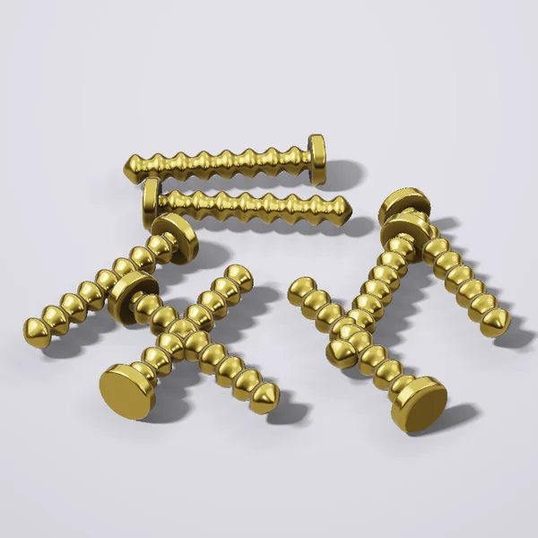

Yoğoç şurupi 3,5×35, 1 kg

48 000 so‘mdan / qadoq
Yoğoç va gipsokarton uçun zangga qarşi qoplamali şuruplar.
- Ölçov
- qadoq
- Vazni
- 1 kg
- Mamlakat
- Özbekiston
Toşkent böylab Yandex yetkazib beriş: 15 kg gaça kuryer, oğir buyurtmalar uçun yuk taksi. Dökondan olib ketiş bepul.
Dökonlardagi narxlar
| Dökon | Narx | Mavjudligi |
|---|---|---|
| Usta Market Çilonzor | 48 000 söm | bor |
| Temir Ombor Bektemir | 48 500 söm | bor |